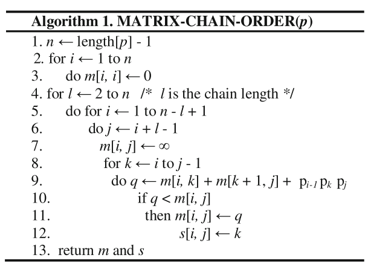
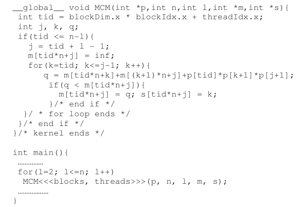
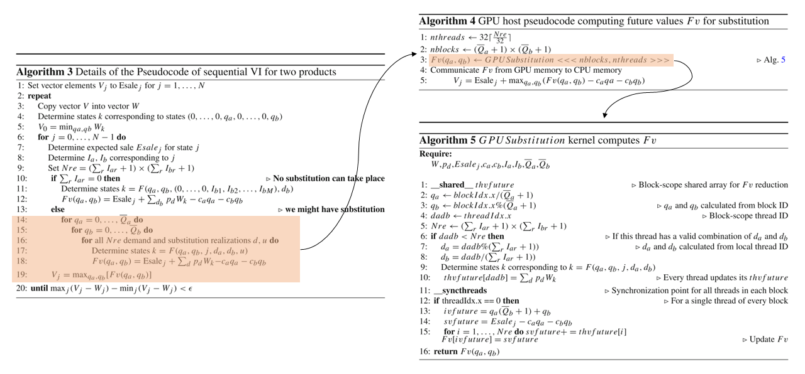

Use GPU to accelerate solving dynamic programming
优化的层级
-
分类：
Level Summary Paper Detail High-level from the algorithm aspect 2016: [[learning_note/0.paper/gpu/gpu_and_dp#dynamic-programming-parallelization-of-matrix-chain-multiplication-on-gpu-a-comparative-study Dynamic programming parallelization of matrix chain multiplication on GPU: a comparative study]] 2019: [[learning_note/0.paper/gpu/gpu_and_dp#a-cuda-approach-to-compute-perishable-inventory-control-policies-using-value-iteration A CUDA approach to compute perishable inventory control policies using value iteration]] Mid-level Computation-data access 2009: [[learning_note/0.paper/gpu/gpu_and_dp#on-the-robust-mapping-of-dynamic-programming-onto-a-graphics-processing-unit On the robust mapping of dynamic programming onto a graphics processing unit]] Low-level How it is run on specific HW -
High-level：将循环中前后项无相互依赖关系的序列运算并行化，将N -> 1
-
Mid-level：在准备数据时进行padding等操作，提高内存效率
An efficient parallelization strategy for dynamic programming on GPU
Karl-Eduard Berger et al., IPDPS 2013
- progress: 60%, link
- Terms:
- MKP: multidimensional knapsack problem
主要工作
- 提出了一种为在CUDA上运行dynamic programming优化的thread grouping的并行策略
- Dynamic programming对于计算的特点： naturally exposes an important level of parallelism, but also requires frequent synchronization between the parallel processes. 有大量需要并行计算的部分，同时又时常需要在并行进程间进行同步
- 如何普适的在GPU进行DP，并提升并行效率
- 在背包问题（knapsack problem）上进行了验证 串行算法共两层循环，inner和outer
- 主要瓶颈necessary synchronization，解决方案：
- 决定并行策略时需考虑到GPU的技术指标（通过API获取GPU参数）
从串行到并行
- sequencial MKP算法
- 在GPU上的并行实现
- GPU并行程度：fine, coarse,
- Fine grained strategy: 根据independent parallel operations数量，尽可能多的启用threads。对于MKP问题，将inner循环完全交由GPU并行化，outer循环由CPU控制。两者之间需要进行全局同步
- （未命名）将完整的KP算法在GPU kernel中实现 不同的blocks执行outer loop 在每次inner loop的iteration之后执行一次同步，因为CUDA不支持block之间同步（只有全局同步） 尽可能少的创建blocks，每个block包含尽可能多的threads（1024）
- Coarse strategy: 每个threads中执行若干inner loop的iterations，从而避免thead synchronization（论文剩下的部分采用的都是这种并行策略）
- 除了fine/coarse strategy，对内存进行coalesced memory access
- 有的paper报告texture memory access能提高性能，但是经过测试对这个问题没有影响，因
- 此没有使用texture memory
- 在Array中的数据索引：dynamic/static management of multiple constraints
- 给定一个矩阵维度，和一个向量，如何求出向量对应的一维indexing。或反之，给定一个一维indexing，如何找出其在矩阵中的位置。
- Dynamic management of multiple constraints: 方法：求模（mod） 缺陷：所有数据都需要存储在GPU global memory中
- Static dimension specialization Fix the dimension of the problem（因为大多数工程问题的维度是固定的） 将item data (weights and profit)和背包容量保存为local variables 进一步提升：lighter computation of indeces，避免使用除法和求余运算进行索引
评价方法
- 3种不同平台组合，CPU+GPU（GPU的number of cores和streaming multiprocessors） CPU代码采用GCC编译，-O3级别优化 10种问题规模(10k，20k，…，100k instance)
- CPU用时；GPU fine方法（传统方法）用时，加速比例（CPU time/GPU time）；GPU coarse方法用时，加速比例（CPU time/GPU time）；fine与coarse的加速比例（fine time/coarse time）
结论：
- Coarse比fine好，light比static好，static比dynamic好
A dynamic programming model to solve optimisation problems using GPUs
Jonathan Francis O’Connell, Ph.D. thesis 2017
主要工作
- 并行dynamic programming based model。同时运行GPU based computations和memory transactions。使得求解大规模问题时不会因为memory constraints导致运算暂停
GPU-accelerated value iteration for the computation of reachability probabilities in MDPs
Zhimin Wu et al., ECAI 2016
-progress: 80%, link
主要工作
- 通过针对MDP代数特征的研究（algebraic features, e.g., matrix structure），通过action-based矩阵进行大规模并行以提高效率，比传统VI提升了10倍以上的速度，在绝大多数情况下比TVI（topological value iteration）表现好。
- Take advantage of the algebraic structure of MDPs to define action-based matrices and corresponding data structures for efficient parallel computation of reachability porbabilities on GPUs.
- Develop an efficient parallel VI algorithm for computing rechability probabilities that utilizes features of modern GPUs, e.g., dynamic paralleism and memory hierarchy.
Terms
- TVI: topological value iteration
- SCCs: strongly connected components
解决方案
- Action-based matrices:
给出任意一个action，找出所有能使用这个action的state
以及在使用这个action之后后续所转移到的状态 ，和状态转移概率一起组成一个这个action所对应的新的矩阵 例如在Frozen lake中，action“向上走”中的 是所有grids， 是除掉底部的所有grids，顶部的 设置为0；或者 是去掉顶部的所有grids， 是除掉底部的所有grids MDP: for each action , an action-based matrix is a tuple is the set of states in which action is activated is the se of states reached via action from states in - 并行化：将action-based matrices作为最小单位，将整个过程转化为several interleaving action-based matrix to vector multiplications and subsequent minimisation where each action-based matrix to vector multiplication is an independent computation
实现与试验结果
- 与传统VI和TVI在五种数据集上进行了比较（数据集参见一作的Ph.D. thesis），主要考察整体运行时间。
其它
- 一作的Ph.D. thesis：Parallelizing Model Checking Algorithms Using Multi-core and Many-core Architectures， 2017
- csma3: The IEEE 802.3 CSMA/CD protocol is designed for networks with a single channel and specifies the behaviour of stations with the aim of minimising simultaneous use of the channel.
- coin6: The shared coin protocol of the randomised consensus algorithm of Aspnes and Herlihy [204]. coin-2/4/8 have the same structure but with different size of state space.
- rabin4: The choice coordination problem (distributed consensus)
Markov decision process parallel value iteration algorithm on GPU
Peng Chen et al., ISCA 2013
- progress: 60%, link
- 主要工作：实现了串行和并行的value iteration算法 举例使用的模型：基于概率状态转移的寻路问题（out of play model）
On the robust mapping of dynamic programming onto a graphics processing unit
Shucai Xiao, et al., ICPDS 2009
- progress: 40%, link
- Improve the computational efficiency on the mid-level (improving memory access and synchronization efficiency)
主要工作
- 针对SWat(Smith-Waterman)算法提出了两种加速方案：
- 更有效的访问GPU的global memory
More efficient GPU global memory
- Simple implementation (matrix re-alignment)
- Coalesced implementation (coalesced memory access)，速度最快，将访问长度补齐
- Tiling wavefront，速度最慢
- GPU (rather than CPU) synchronization
因为数据将跨block/跨multiprocessor共享，因此提出了不需要host CPU参与的GPU synchronization
Share the data across block/multiprocessor, therefore design a GPU synchronization does not require CPU to involve.
- 具体方法：
通过
__threadfence()和原子操作为flag置位完成block之间的同步 参考关于CUDA中__threadfence的理解 - 局限：为了避免互锁inter-lock问题的出现，thread block和SM必须一一对应。即启动的block数量不能超过GPU上SM的数量
- 具体方法：
通过
- 更有效的访问GPU的global memory
More efficient GPU global memory
- 存在的问题：
- 最直接运用GPU的方法：简单的将算法在GPU的每个multiprocessor上复制 The most straight forward method of using GPU: duplicate the algorithm on each multiprocessor. 问题规模和提升速度受到GPU每个multiprocessor可用shared memory和cache限制。 Existing problem：Problem scale and speed-up is limited by the shared memory and cahce of each multiprocessor. What is “embarrassingly parallel ensemble”？
- GPU的Fine-grained parallelization需要额外的multiprocessor之间的同步步骤，增加了延迟，因此一般使用coarse-grained approach Fine-grained parallelization on GPU needs extensive communication between the multiprocessors of a GPU，so usually use coarse-grained approach
Accelerating global memory access
- 三种方法进行内存填充和运算（选择其一）
Three method to filling the memory for computation (choose one from the three)
- Matrix re-alignment（ref to as simple implementation）
- 行矩阵将元素移动至反对角线上 from row-major data format to a diagonal-major data format
- Coalesced memory access
- padding data for coalesced memory access
- Tiling
- Assigns a thread block to compute a tile. A gird of blocks is mapped to process a single tile-diagonal（tiled-wavefront）
- 通过减少numver of kernel launches减少了同步所需的时间 Reduce the numver of kernel launches -> reduce the time costed by synchronization.
- Matrix re-alignment（ref to as simple implementation）
GPU synchronization
- 存在的问题：global memory communication inter-block
- 解决方案：one-to-one mapping between the SM and the thread block
性能分析
- 3种Global memory access策略 x 2种同步策略（CPU/GPU），共六种方案
3 global memory access methods
2 sychronizing（CPU/GPU） methods = 6 - Execution (matrix-filling) time (比较六种策略在kernel上block数量不同时的表现)
Execution (matrix-filling) time (comparing the performance of 6 methods when there are different number of blocks on a kernel)
- total execution (matrix filling) time coalesed < simple < tiled wavefront coalesced need fewer data transactions to fill the matrix
- profile of the time spent computing vs. synchronizing in the matrix-filling phase on the GPU kernel上blocks数量对性能的影响 How the number of blocks on a kernel affects the performance
- (Not important) Cell/BE vs. GPGPU
- Computation vs. sychronization on the GPU 同步所用时间占比由少到多： Synchronization time from low to high: Tiled < coalesced < simple
A scalable GPU-based approach to accelerate the multiple-choice knapsack problem
Bharath Suri, et al., DATE 2012
Toward efficient architecture-independent algorithms for dynamic programs
Mohammad Mahdi Javanmard, et al., PPoPP 2019
-
progress: 10%, type: full paper & poster
-
主要工作:
- 提出了
算法： A class of grid-based parallel recursive divide-&-conquer algorithms for solving dynamic programming problems can be run with provably optimal or near-optimal performance bounds on fat cores, thin cores, and purely distributed-memory machines without changing their basic strcture. 一类经过优化的，用于在CPU/GPU/分布式系统上运行的， 并行实现递归分治的算法 主要处理在使用不同并行架构加速时，如何让数据更好的适应异构内存，从而通过减少内存读写耗时提高算法效率 - (Poster version)
- （term）
：用一类grid-based parallel recursive divide-&-conquerrecursive divide-&-conquer算法解决DP问题 - 将2-way
扩展至r-way - 如何将算法扩展到external-memory GPU与distributed-memory的架构上
- （term）
- Paper version：
- 如何将为shared-memory multicore设计的2-way recursive divide-and-conquer算法扩展至manycore GPUs和distribute-memory machines上
- 现有方法存在的问题：计算过程中当前数值往往依赖前一次计算的数值结果，但未考虑内存异构的情况（更常访问的变量放在寄存器中）
- 对于这个问题的一般解决方法：Tiled looping，但是必须知道smaller memory level的尺寸，对于不同架构，具体的解决代码不一样
- 一般的r-way divide-&-conquer DP算法：解决了memory size和层次必须已知的问题，但是不适用于GPU这种对recursion支持受限，并且需要对内存进行复杂操作的架构
- 如何将为shared-memory multicore设计的2-way recursive divide-and-conquer算法扩展至manycore GPUs和distribute-memory machines上
- 提出了
-
References/terms to check
- Cache-adaptive algorithms, 2014，如何在cache的层面进行优化
- cache-adaptive, cached-oblivious, ideal cache
-
问题：
- Shared-memory (multi- and many cores)和distributed-memory有什么区别？
- shared-memory是在处理器内部的
- distributed-memory是在分布式系统间的
- Shared-memory (multi- and many cores)和distributed-memory有什么区别？
Dynamic programming parallelization of matrix chain multiplication on GPU: a comparative study
Tausif Diwan, et al., Artificial Intelligence and Evolutionary Computations in Engineering Systems, 2016
-
progess: 40%
-
主要工作：
-
Thread-level多核/GPU的针对matrix chain multiplication的优化及实现
- 在OpenMP和GPU上实现了并行的
的算法，未对算法进行过多改进 - 主要是对CPU多核（OpenMP实现）和GPU（CUDA）实现的效率比较
- 没有随着问题的求解动态配置Threads数，而是选取了多个固定的Threads数进行对比
traditional GPU   - 算法时间复杂度为
，共三层循环 - 矩阵链的长度（子链）
- 子链的起始矩阵（同时由长度可知结束矩阵）
- 子链的拆分位置
- GPU并行优化（所以理论上是
？）： - CPU负责第一层循环（子链长度为2,3,…,n）
- 第二层循环为thread并行执行
- 将第三层循环放在thread内串行执行 一个thread的工作：给定一个子链，循环得出其在不同位置拆分的代价，找出针对这个子链的最优解，m[i, j]和s[i, j]
- 在OpenMP和GPU上实现了并行的
-
-
问题：
- 有没有可能将第二层循环和第三层循环都打散到并行thread中？
A CUDA approach to compute perishable inventory control policies using value iteration
G. Ortega, et al., The journal of supercomputing, 2019
-
progress: 60%
-
主要工作：
- 实际问题：perishable inventory control
- 参考文献的层次：
- 用CUDA在GPU上实现VI (value iteration) process
- 通过OpenCL实现了用于path finding problem的VI
- 用HPC为traffic control table实现大尺寸的MDP
- 将MDP model加速用于crowd navigation (simulation)
- 提出的方法： 将SDP(stochastic dynamic programming)/value iteration用于简化的retailer inventory control模型，模型包含了一个或者两个product，评估了对GPU的使用
- 具体工作（解决方法存在的问题）：如何从GPU的角度实现针对perishable inventory control模型的SDP/VI
- 如何分析computational burden:
- Measure the number of states
- computational time of a Matlab implementation for several instances
- 可能GPU的实现还是用的Matlab
- 性能提升：整体速度提升11.7x，GPU替换部分速度提升19.6x
-
实现 
We spawn as many blocks as combinations
, i.e., up to a total of blocks, and each block contains, at least, as many threads as combinations , i.e., a total of threads.
GPU-Based Markov Decision Process solver
Ársæll Þór Jóhannsson, Master thesis 2009